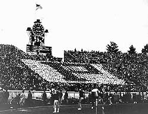

|  |
As part of the half-time show at the football games at my university, there is a card section of a rectangular array of students. While the marching band performs on the field, these students hold up cards of various colors in order to form various designs. There are r rows of p persons per row.Once I recall that, due to a bad flu epidemic, 20 of the members were unable to participate for the game that week. The organizers of this project got around this difficulty by reducing the number of rows by 2, while increasing the number of persons per row by 2. And with some new designs, things came out just fine.
In the post-season, the school was invited to play in a bowl game. The excitement grew so much that a larger rectangle was planned. By increasing both the number of rows and number of persons per row by 4, the "row-to-persons" ratio turned out to be 2:3.
How many persons were normally used in this activity?
Extra: How many persons joined the project for that bowl game?
| Comments? Send e-mail. | Back to top | Go back to Home Page | Go back to Contents |